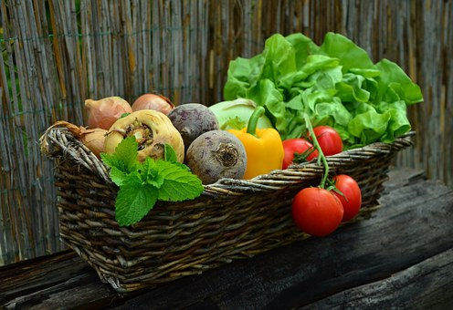

Actualmente ante la creciente concienciación de la sociedad hacia el medio ambiente se abre paso un nuevo mundo en nuestro día a día, el de los denominados productos ecológicos. Estos son cada vez más frecuentes en los supermercados. Sin embargo, ¿sabemos exactamente qué son los productos ecológicos?¿Conocemos los requisitos que deben de cumplir para considerarse como tal?
Para que un alimento sea considerado como ecológico debe cumplir la normativa y ciertos requisitos. Conoce sus características, qué debe indicar su etiquetado, y sus diferencias y ventajas respecto a los convencionales.
'Eco', 'bio', 'orgánico', 'natural'…, son términos que podemos encontrar fácilmente en cualquier supermercado y que nos remiten a un tipo de producción alimentaria (agricultura o ganadería) sostenible. Sin embargo, no todas las menciones están aceptadas, ni significan lo mismo. La normativa establece claramente las pautas que se deben cumplir para poder considerar que un alimento es ecológico, y sólo los productos que las siguen pueden indicarlo en el etiquetado.
Cuando hablamos de algo "ecológico" se hace referencia al modo en el que se ha obtenido un determinado producto. En concreto, los alimentos ecológicos hacen referencia a aquellos que se han obtenido mediante métodos agrícolas respetuosos con el medio ambiente, es decir, que respetan los ciclos naturales sin alterarlos artificialmente.
La importancia de las prácticas amigas de la naturaleza es que pueden mejorar la calidad del suelo y del agua, además de bajar los niveles de contaminación que se pueden generar durante la producción y así conseguir una utilización sostenible de los recursos.
La característica principal de los alimentos ecológicos es que no se han visto expuestos a ningún tipo de pesticida o sustancia química que no sea natural (fertilizantes artificiales para que la tierra tenga una mayor cantidad de nutrientes, herbicidas, hormonas de crecimiento y antibióticos para el ganado…). Por lo tanto, también quedan excluidos de este tipo de alimentos aquellos modificados genéticamente (transgénicos) que resistan mejor las plagas y mejoren el rendimiento de los cultivos.
Los consumidores tendemos a identificar los alimentos ecológicos con características que no siempre se corresponden con las que establece la legislación. Según la normativa, sólo pueden denominarse ecológicos los productos agrarios vivos o no transformados (los animales y cultivos), los transformados destinados a la alimentación humana (carne, hortalizas…), los piensos y las semillas.